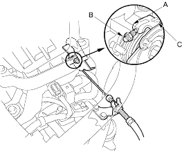

- Check the throttle cable operation. The cable should operate without binding or sticking.
- If the cable operates OK, go to step 2.
- If the cable binds or sticks, check the throttle cable and its routing. If it is faulty, re-route it or replace it and adjust it (see page 11-150), then go to step 2.
- Operate the throttle lever by hand to see if the throttle valve and/or shaft are too loose or too tight.
- If there is excessive play in the throttle valve shaft or the throttle valve binds at the fully closed position, replace the throttle body.
- If the throttle valve and shaft are OK, go to step 3.
- Check for clearance (A) between the throttle stop screw (B) and the throttle lever (C) at the fully closed position. If there is any clearance, replace the throttle body (see page 11-151). Do not adjust the throttle stop screw.
